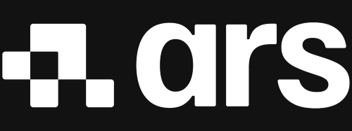

Get started#
Benvenuto nel manuale di FlexiVision Easy!#
Siamo entusiasti di darvi il benvenuto alla vostra nuova guida di FlexiVisionEasy! Questo manuale è stato creato appositamente per essere il vostro punto di riferimento chiaro e affidabile. Ci auguriamo che, consultandolo, possiate godere appieno di tutti i benefici del nostro sistema. Il vostro parere è fondamentale per noi: non esitate a fornirci il vostro feedback contattandoci!
- Il Team di Ars Automation 
Cosa è FlexiVision Easy?#
FlexiVision® Easy è la nostra soluzione di visione basata su VisionController, pensata per guidare il robot e disponibile come componente aggiuntivo per i sistemi FlexiBowl®. Mantenendo tutte le potenti funzionalità della versione precedente, permettendo quindi lo scarico, la separazione, il riconoscimento e il prelievo dei pezzi sfusi sulla superficie dell’alimentatore, FlexiVision Easy rivoluziona l’esperienza utente. Grazie a una guida passo passo completa e a strumenti intuitivi, abbiamo estremamente semplificato il processo, rendendo la programmazione e l’utilizzo accessibili e utilizzabili da chiunque, indipendentemente dal livello di esperienza.
Panoramica del sistema#
immagine anche con collegamenti a tre flexibowl, tre camere e tre tramogge
Come leggere il manuale#
Questo manuale è stato concepito per supportare sia la fase di progettazione e integrazione di sistema, sia la fase di installazione e messa in servizio in campo. Per questo motivo, è diviso in delle macro-sezioni con destinatari e finalità distinte.
Qual è la sezione che stai cercando?#
Se devi… |
L’informazione si trova in… |
|---|---|
Verificare dimensioni, pesi, requisiti elettrici e protocolli di comunicazione |
RIFERIMENTO TECNICO E SPECIFICHE |
Installare i componenti, cablare il sistema, configurare la rete o calibrare camera/robot |
INSTALLAZIONE DEL SISTEMA e QUICKSTART |
Programmare un nuovo modello pezzo o configurare il sistema di alimentazione |
QUICKSTART: GUIDA OPERATIVA |
Risolvere problemi o richiedere assistenza |
TROUBLESHOOTING e SUPPORT |
Gruppi di intervento e responsabilità#
La corretta implementazione di FlexiVision Easy richiede la collaborazione di diverse figure professionali. Questa tabella chiarisce ruoli e responsabilità:
Figura professionale |
Responsabilità principali |
Sezioni del manuale di riferimento |
|---|---|---|
Integratore di sistema |
Progettazione layout, dimensionamento componenti, verifica requisiti tecnici |
Riferimento tecnico e specifiche, Opzioni |
Tecnico installatore |
Montaggio meccanico, cablaggio elettrico, configurazione rete |
Installazione del sistema, Cablaggio e connessioni |
Programmatore robot |
Calibrazione camera-robot, integrazione plugin, programmazione logiche di prelievo |
Quickstart, Protocol Setup, Calibrazione |
Operatore di linea |
Creazione nuovi modelli pezzo, configurazione parametri FlexiBowl, monitoraggio prestazioni |
Nuovo modello, Config FlexiBowl, Verifica risultati |
Manutentore |
Diagnosi problemi, sostituzione componenti, aggiornamenti software |
Troubleshooting, Support |
Convenzioni e simboli utilizzati#
In tutto il manuale vengono utilizzati banner informativi per evidenziare contenuti importanti:
Tipo |
Significato |
|---|---|
Warning Avvertenza |
Indica una situazione potenzialmente pericolosa o una procedura critica che, se non eseguita correttamente, potrebbe provocare danni all’apparecchiatura o malfunzionamenti gravi del sistema. |
Note Nota informativa |
Fornisce informazioni essenziali per il corretto svolgimento della procedura, chiarimenti tecnici o rimandi a capitoli correlati. |
Tip Suggerimento |
Suggerisce una pratica ottimale, un’alternativa o un consiglio che può semplificare l’installazione o migliorare le prestazioni del sistema. |